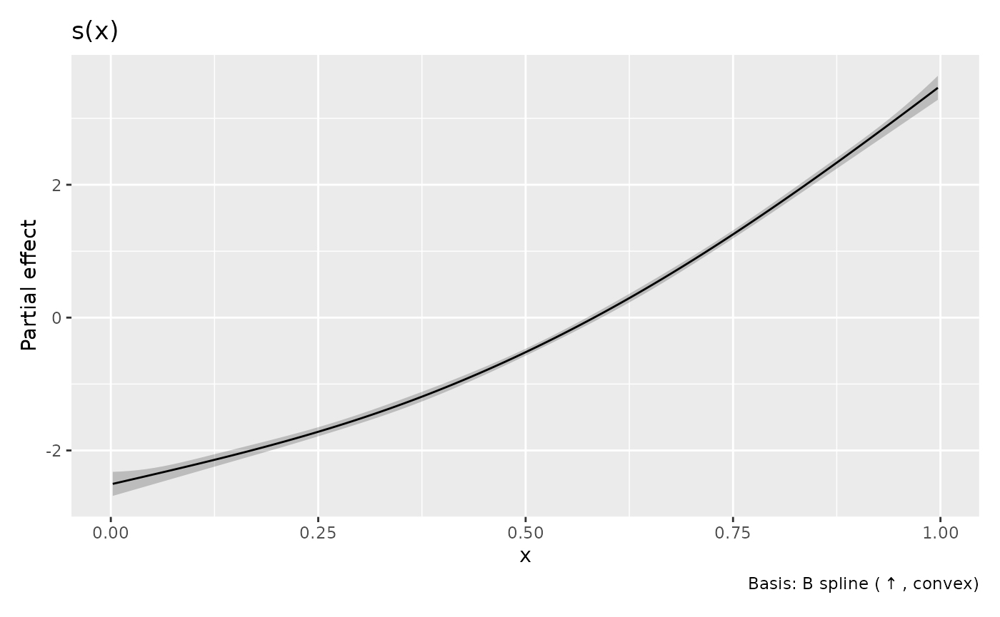
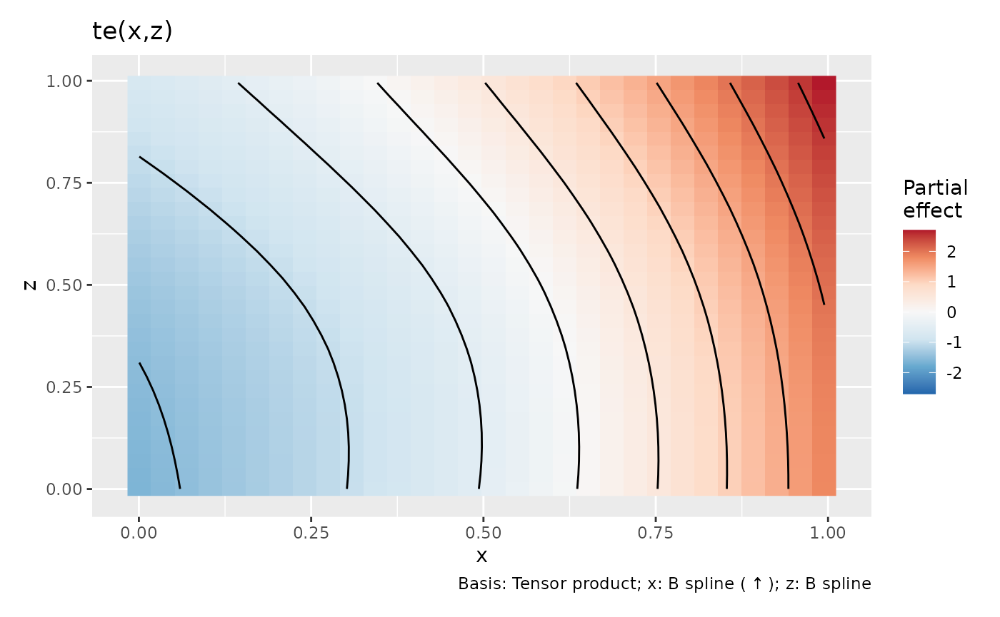

Shape-constrained intervals and coefficient confidence sets
Source:vignettes/articles/shape-constrained-intervals.Rmd
shape-constrained-intervals.RmdA smooth fitted with an increasing or convex shape constraint can
still have interval endpoints that lack that shape.
shape_intervals() adjusts the endpoints to satisfy the
chosen restrictions at the evaluation points. For restrictions that
apply to a whole function, such as requiring its integral to equal one,
shape_confidence_set() instead records the coefficient
vectors satisfying those restrictions and the supplied uncertainty
bounds.
We first apply these functions to supplied intervals and fitted smooths, then explain what the transformations imply for coverage. The examples use {gratia}, {mgcv} and {ggplot2}, which we load below.
Apply shape restrictions to existing intervals
shape_intervals() works directly on estimates and
interval limits that you supply. It can impose non-negative values,
increasing or decreasing values, and convex or concave curvature. To
impose increasing values it sorts the supplied values along the relevant
coordinate. To impose convexity it finds the largest convex curve lying
below those values; this is called the greatest convex
minorant. Concavity uses the corresponding operation with signs
reversed. These operations follow Chen and colleagues
(2021), building on monotone rearrangement.
The following small example requests endpoints that are both increasing
and convex over x. The deliberately uneven initial
estimates make the adjustment visible in the returned values.
x <- c(0, 0.1, 0.35, 0.7, 1)
estimate <- c(0.1, 0.3, 0.2, 0.8, 1.1)
shaped <- shape_intervals(
estimate, estimate - 0.3, estimate + 0.3,
data = data.frame(x = x), constraints = list(x = c("m+", "c+")),
interval = "simultaneous", level = 0.95
)
shaped
#> # A tibble: 5 × 4
#> x .estimate .lower_ci .upper_ci
#> <dbl> <dbl> <dbl> <dbl>
#> 1 0 0.1 -0.2 0.4
#> 2 0.1 0.157 -0.143 0.457
#> 3 0.35 0.3 0 0.6
#> 4 0.7 0.731 0.431 1.03
#> 5 1 1.1 0.8 1.4
attr(shaped, "interval_info")
#> $method
#> [1] "shape"
#>
#> $level
#> [1] 0.95
#>
#> $interval
#> [1] "simultaneous"
#>
#> $source
#> [1] "supplied"
#>
#> $correction
#> [1] "none"
#>
#> $shape
#> $shape$x
#> [1] "m+" "c+"
#>
#>
#> $operator
#> [1] "range, rearrangement, directional convex minorant"
#>
#> $domain
#> [1] "evaluation grid"
#>
#> $scope
#> [1] "grid"
#>
#> $coverage
#> [1] "whole-grid containment preserved"
#>
#> $pointwise_calibration
#> [1] "not requested"
#>
#> $interpretation
#> [1] "inherited from input"The returned table contains .estimate,
.lower_ci and .upper_ci, with method
information in interval_info. Here
level = 0.95 labels the starting limits. For an analysis,
supply limits from an uncertainty calculation that supports the stated
coverage. The final section shows how the adjustment can change that
coverage.
The supported codes are "+" for non-negative values,
"m+" and "m-" for increasing and decreasing
values, and "c+" and "c-" for convexity and
concavity. Increasing and decreasing include flat sections. A complete
Cartesian grid can have monotonicity in several directions and curvature
in at most one direction. These are directional restrictions: convexity
along one coordinate does not establish joint convexity of a
surface.
Rows may be unordered and coordinates may be irregularly spaced. Convexity uses slopes computed from the actual coordinate differences. The sorting step gives each distinct coordinate equal weight, even when distances between coordinates differ. Duplicate grid rows and incomplete combinations of coordinates are rejected.
Add shape-constrained intervals to a fitted smooth
For supported mgcv::scasm() smooths, request the
adjustment with interval_method = "shape". Here
x ranges over the unit interval and the mean response is an
increasing, convex quadratic function of x. Independent
Gaussian noise has standard deviation 0.2. We fit those two shape
restrictions and construct a simultaneous band using a Gaussian
approximation to coefficient uncertainty, selected by
shape_source = "gaussian".
set.seed(1701)
d <- data.frame(x = runif(200))
d$y <- 2 * d$x + 4 * d$x^2 + rnorm(nrow(d), sd = 0.2)
m <- scasm(
y ~ s(x, bs = "sc", xt = c("m+", "c+"), k = 6),
data = d, bs = 0
)
curve <- smooth_estimates(
m, select = "s(x)", interval = "simultaneous",
interval_method = "shape", shape_source = "gaussian",
n = 100, n_sim = 2000, seed = 1702
)
draw(curve)
This displays the smooth on the model scale, with the centring used
in the fit. Its band describes uncertainty in the smooth itself. Use
overall_uncertainty = FALSE if you set that argument
explicitly. Shape intervals apply to the fitted smooth in its original
units and require any effect shifts and transformations to be omitted.
The standard errors in curve describe the calculation
before the shape adjustment. Read the adjusted limits directly from
.lower_ci and .upper_ci.
Default plot captions show the basis and named shapes. The interval
source, level and coverage information remain in the result’s
interval_info attribute and in this documentation.
The Gaussian source uses the model’s approximate Bayesian covariance
by default. Set frequentist = TRUE to use the covariance of
the coefficient estimators. unconditional = TRUE requests
the correction for smoothing parameter uncertainty when available. The
chosen covariance determines the starting band. The shape adjustment
changes its limits and leaves the underlying coefficient distribution as
it was.
The same method selection is available through draw(),
assemble() and confint() for supported smooth
components. For example,
draw(m, interval = "simultaneous", interval_method = "shape", n_sim = 2000, seed = 1702)
computes and displays the intervals in one call. Select smooths whose
named restrictions are still in force after fitting. Use an explicit
confidence set for more general coefficient constraints, as described
below. Numeric by variables are unsupported because
multiplying the smooth by a varying value can change its shape.
If you supply general coefficient inequalities in pc,
mgcv can use those in place of the named restrictions in
xt. In that case, the plot caption identifies the requested
restrictions as dropped and shape intervals are unavailable. Point
equality constraints are supported when the named restrictions still
apply. A constraint on the smooth itself need not imply the same
constraint on its derivative, so bases that evaluate derivatives are
unsupported.
For transformed covariates, shape is asserted in the coordinates used
by the model. For example, a restriction on s(log(x), ...)
concerns log(x); curvature in that coordinate need not be
curvature in x.
Constrain one direction of a smooth surface
For a surface, shape restrictions can apply along one covariate while
the other remains unrestricted. The example below has an increasing
exponential effect of x, a quadratic effect of
z, and independent Gaussian noise with standard deviation
0.15. We constrain the fitted surface to increase with x at
each fixed z.
This construction requires B-spline margins fitted with
np = FALSE, which keeps their original parameterisation,
and evaluation within their fitted domains. Both "sc" and
ordinary "bs" margins are supported. These requirements
ensure that the coefficient restrictions imply the stated shape of the
surface.
set.seed(1703)
surface_data <- data.frame(x = runif(300), z = runif(300))
surface_data$y <- exp(1.5 * surface_data$x) + surface_data$z^2 +
rnorm(nrow(surface_data), sd = 0.15)
surface_model <- scasm(
y ~ te(x, z, bs = c("sc", "bs"), k = c(5, 5),
xt = list("m+", NULL), np = FALSE),
data = surface_data, bs = 0
)
surface <- smooth_estimates(
surface_model, select = "te(x,z)", interval = "simultaneous",
interval_method = "shape", n_2d = 30, dist = 0,
n_sim = 2000, seed = 1704
)
draw(surface)
The surface and its interval limits increase with x at
each fixed z. dist = 0 keeps every combination
of the two grid coordinates, as required for the adjustment. Keep the
evaluation grid within the fitted B-spline domains.
Automatic curvature inference additionally requires regular knots and
a sufficient spline degree. In mgcv 1.9-4, the raw second coefficient
differences used by "c+" and "c-" do not
ensure spline curvature with arbitrary irregular knots. Equal spacing is
checked to rounding precision, because even small departures can reverse
curvature when a coefficient restriction binds. Requests with those
knots are rejected. The low-level operator can still enforce a justified
shape directly on an irregular evaluation grid; that is a separate
statement from the shape implied by fitted inequalities. Requests for
multiple curvature directions are also rejected because a later
convexification can destroy curvature enforced in an earlier
direction.
Use bootstrap limits as the starting intervals
With bs > 0, a scasm() fit stores
bootstrap coefficient vectors that satisfy the fitted constraints in
model$bs. The bootstrap holds smoothing parameters fixed
and perturbs the working likelihood from the final fit. The intervals
from mgcv use percentiles of curves evaluated at each grid point. When
svar.only is present, mgcv also adjusts the limits using
the mean difference between Bayesian and frequentist standard errors.
Percentiles of convex functions need not be convex, and the endpoint
adjustment can alter restrictions further.
interval_method = "shape", shape_source = "bootstrap"
adjusts these pointwise limits using the same shape rules. Supply a
model with stored bootstrap draws and keep
frequentist = FALSE and unconditional = FALSE
to match the mgcv calculation. This option supports pointwise starting
limits only. Bootstrap coverage can be poor at the boundary of the
allowed shapes, for instance when a curve constrained to be increasing
is actually flat. Andrews (2000).
Keep an integral or other coefficient restriction fixed
An integral equality cannot generally be assigned to two different ordered endpoint curves. If both have integral one and their difference is nonnegative, that difference must have integral zero. A useful uncertainty description instead retains a set of whole functions.
shape_confidence_set() stores the intersection
\{b: L\leq Xb\leq U,\quad A_{\mathrm{in}}b\geq b_{\mathrm{in}}, \quad Cb=d\}.
Here b is a candidate coefficient vector. The prediction matrix X maps it to curve values, which must lie between the supplied limits L and U. The other two conditions specify inequalities and equalities on b.
In the following example, the three coefficients give the values of a
piecewise linear curve at x = c(0, 0.5, 1). The positive
weights below give its exact integral over [0, 1], which is
required to equal one. We combine that equality with non-negative
coefficients and bounds from zero to two, then test two candidate curves
for membership of the resulting set. A spline analysis would supply its
own prediction matrix and integrals of basis functions.
weights <- c(0.25, 0.5, 0.25)
region <- shape_confidence_set(
X = diag(3), lower = c(0, 0, 0), upper = c(2, 2, 2),
Ain = diag(3),
C = matrix(weights, nrow = 1), d = 1,
level = 0.95, interpretation = "confidence", band_type = "simultaneous"
)
in_shape_set(region, c(0.5, 1, 1.5))
#> [1] TRUE
in_shape_set(region, c(0.5, 1, 1))
#> [1] FALSEThe first candidate satisfies the integral equality; the second does
not. in_shape_set() checks membership with a documented
absolute tolerance. It does not generate draws or find the largest and
smallest possible values. The restrictions can also be inconsistent,
leaving an empty set, so check that they express the intended scientific
constraints.
As in the earlier interval example, level and
band_type describe the bounds you supply. If the true
coefficients satisfy the restrictions, intersecting their allowed values
with a simultaneous band preserves that band’s coverage event. Pointwise
limits alone do not provide a simultaneous confidence region.
The set retains linear equalities and inequalities involving several coefficients together. It describes which functions are allowed by the restrictions and supplied bounds. To draw functions from a Bayesian posterior, one would also need to specify that posterior on the allowed coefficients; see Hazelton and Turlach (2011) for shape-constrained penalised splines. Likewise, Dümbgen (2003) constructs calibrated bands using multiscale tests in a Gaussian white-noise model. Those calibration results are distinct from the finite-grid endpoint transformation implemented here.
How shape restrictions affect coverage
Write T for the complete shape operator and f for target values satisfying the requested shape on the grid. The operator preserves order and fixes f. Consequently,
L \leq f \leq U \quad\Longrightarrow\quad T(L) \leq T(f)=f \leq T(U),
where each inequality holds at every grid point together. Thus if the original band contains the target at every grid point, the adjusted band also contains it at every point. The same preservation of coverage applies to a credible band if the posterior is defined on curves that satisfy the constraints. The band’s greatest width over the grid cannot increase, although it can become wider at individual points.
This implication does not establish nominal coverage for the initial
band. In particular, transforming separately calibrated pointwise limits
does not preserve their marginal coverage at each point: sorting moves
information between coordinates. interval = "pointwise"
records this source calibration without assigning new pointwise coverage
to the result. Penalisation bias or an inadequate covariance
approximation can also affect initial coverage; the shape operation does
not correct either problem.
Connecting the returned points by straight lines preserves the curve shape, but the coverage statement concerns the grid points only. An adjusted limit curve can also differ from any spline in the original basis, so the limits need not satisfy the centring conditions imposed on the fitted spline.
Coverage in simulation studies
The experiment in notes/scasm/shape-coverage.R examines
two settings: Gaussian intervals with known variance, and intervals
estimated from fitted scasm() models. It uses 2,000
repetitions per known-variance scenario and 400 attempted fits per
scasm() scenario, including exactly flat and exactly linear
true functions. At 95% coverage, the binomial Monte Carlo standard error
is about 0.5 percentage points for 2,000 repetitions and 1.1 percentage
points for 400 successful fits. The scasm() experiment
applies shape_intervals() to fitted response curves
including their intercepts, so the true and fitted curves use the same
reference level.
For a nearly flat increasing truth, the smallest marginal coverage over grid points fell from 93.65% to 38.00% after transforming Gaussian pointwise limits. Using an initially calibrated simultaneous band, whole-grid coverage instead changed from 94.85% to 95.75%. No originally covering whole-grid band lost coverage in any of the 49,182 paired transformations across the experiment. These results illustrate why the distinction between pointwise intervals and simultaneous bands matters: preserving an already covering whole band does not preserve coverage at each individual point after sorting.
The scasm() examples also show that the initial
uncertainty calculation still matters after imposing shape restrictions.
For a true curve close to the boundary of the increasing, convex
restrictions, the transformed Gaussian simultaneous band covered the
whole grid in 313 of 342 returned fits: 91.52%, with Monte Carlo
standard error 1.51 percentage points. The other 58 attempts raised
upstream fitting errors, so this estimate is conditional on a model
being returned. The saved reports record the fitting errors and warnings
separately. Changing the smoothing penalty also changed local bias, but
that comparison did not assess interval coverage or width. The shape
adjustment itself does not correct smoothing bias.